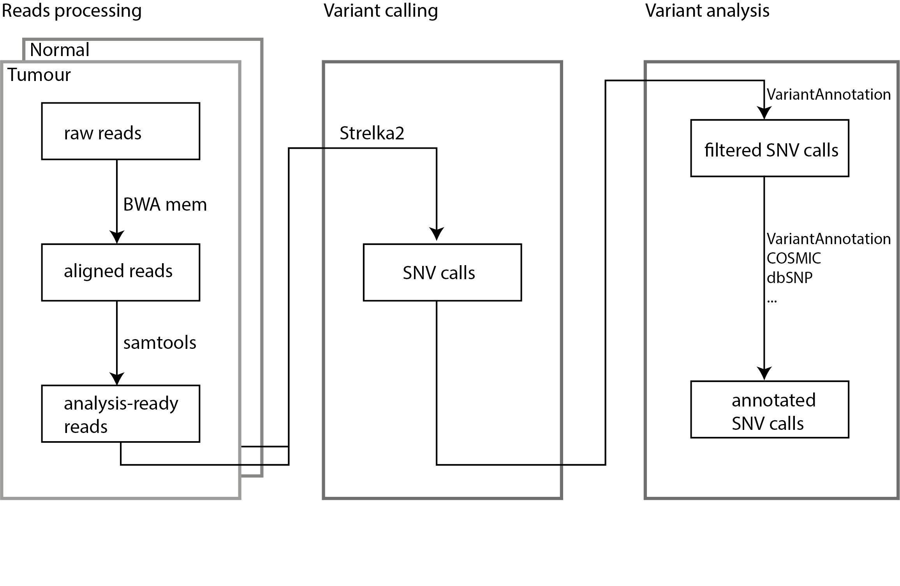

vignettes/genomics_workshop.Rmd
genomics_workshop.RmdIn this 2-hour workshop, you will have hands-on experience on SNV calling and analysis. You will be provided toy short-read sequencing samples, followed by read alignments, variant calling and pathogenicity analysis.
This workshop will guide you through the workflow of a simple genomic SNV analysis.
This is a hands-on workshop, which means you will be given time to get the tools running.
For each task, you will be given a brief instruction prior to getting your hands dirty. At the end of the given time, there will be a brief summary.
Basic knowledge of using command line and Rstudio is ideal. Although strictly speaking, no prior knowledge is required to attend this workshop.
The workshop runs for 2 hours. You will find tasks and related information in the worksheet.
If you run into any problems, please describe the issue and send via zoom chat. The instructors will be monitoring the chat panel and answer any question in real time.
For this 120-minute workshop:
| Activity | Time |
|---|---|
| Introduction | 5m |
| Working Environment: command line and Rstudio | 15m |
| Read Alignment: bwa and samtools | 30m |
| SNV calling: Strelka2 | 40m |
| Pathogenicity analysis | 20m |
| Summary | 10m |
Variant calling is a vital component of genomics studies. Genomic variants have been found in various structures and sizes, including single-nucleotide variants (SNVs), small insertion and deletions (INDELs), copy number variants (CNVs) and structural variants (SVs). Computational tools for detecting these variants are developed with different underlying approaches.
This workshop is designed to offer a hands-on experience on genomic variant calling and analysis. The tasks are designed to guide you through the key steps of SNV analysis on a tumour/normal paired sample.
working directories
cd colo829
lsrunning cmd tools
samtools
man samtools #q for quitting the man pagepiping
ls | head -3
Here you will need to align short-read sequencing reads to the reference genome (hg19) and get them ready for SNV calling. There are two samples you will need the work with, the tumor sample and the matched normal sample of COLO8294.
Typical human whole genome sequencing (WGS) data contains hundreds of millions or billions of reads. These data sets take many hours to align so for this workshop we are going to align a very small subset of real sequencing data.
The data we are using today is located in the colo829 directory. The reads can be found at /home/rstudio/colo829/*.fastq.gz, and the reference genome is located at /home/rstudio/colo829/chr7.fa.
Sequence alignment tools are command-line tools so for this first task, we are going to use the command-line terminal.
To start, let us navigate to the directory containing our data.
cd colo829
lsThe cd command is the “change directory” command. It changes our working directory from our “home” directory to the colo829 directory.
The ls command is the “list” command. It outputs all the files and directories in the current directory.
Our input data is paired-end sequencing data for a tumour sample and a matched normal.
This fastq files are output from the sequencing machine and we need to align them to the reference genome. In this workshop, we are going to use chromosome 7 of the hg19 human reference genome as our reference.
We will use bwa mem for our sequence alignment. If we type:
bwa memWe see that bwa mem requires a reference genome, input file(s), and has many optional parameters. The reference genome is chr7.fa, and the files that start with chr7.fa..
bwa mem [options] <idxbase> <in1.fq> [in2.fq] > colo829.samThe output file of bwa mem can be saved as a SAM file, standing for Sequence Alignment Map. For storage efficiency, SAM files are often losslessly compressed to BAM format, standing for Binary Alignment Map.
Try it yourself by modifying this template:
samtools view -S -b output.sam -o output.bamThis step is optional if you “pipe” your bwa output to samtools (see below).
We also need to sort the output of bwa into the order in which they align in the reference genome. For this we will use samtools sort:
samtools sortand samtools index:
samtools indexTo avoid writing additional (uncompressed) files, we will combine the alignment and sorting steps together with a unix “pipe”. A pipe | takes the output from one program and sends it to the next program.
We can run our bwa and samtools commands together in a pipe using:
bwa mem chr7.fa normal_R1.fastq.gz normal_R2.fastq.gz | samtools sort - > normal.bamOur variant caller requires a index file for our normal.bam file so we create this using samtools index:
samtools index normal.bamAs we are doing somatic variant calling, we need to repeat these steps on the tumour sequencing reads as well. Our tumour data is larger than our normal so to reduce the time it takes to perform alignment, we’ll tell bwa mem that it can use both CPU cores available to us in our workshop virtual machines by telling it to use 2 threads.
Now please try applying all the above steps on the tumour reads.
bwa mem -t 2 chr7.fa tumour_R1.fastq.gz tumour_R2.fastq.gz | samtools sort - > tumour.bam
samtools index tumour.bamNow that we have the sequencing reads in order, we will start calling SNVs. We now have both the normal and tumour inputs ready for variant calling. In a real pipeline, there are additional quality control, adapter trimming, and duplicate filtering steps but for this workshop, the data has been pre-processed for us so we can skip these steps.
The variant caller we are using is Strelka2. Looking through the quick start guide, we can see that Strelka2 supports both somatic and germline variant calling. As we are doing somatic variant calling, we want to configure a somatic Strelka workflow
configureStrelkaSomaticWorkflow.py \
--normalBam normal.bam \
--tumorBam tumour.bam \
--referenceFasta chr7.fa \
--runDir strelkaThis created a strelka subdirectory containing runWorkflow.py which is the command we will use to run Strelka.
strelka/runWorkflow.pyAs we can see from the usage message, Strelka requires additional arguments. In our case, we want to specify that we will be running it on the same computer that we are running the runWorkflow.py command. We will also tell Strelka that it can use both the CPU cores available to us.
strelka/runWorkflow.py -j 2 -m localIf you navigate to the colo829/strelka/results/variants/ directory, you should now have a somatic.snvs.vcf.gz file containing the somatic variants that Strelka detected in our example sequencing data.
We use the VariantAnnotation package to read and annotate the SNVs we just found.
#vcf <- readVcf(system.file("extdata", "strelka.somatic.vcf", package = #"IntroductionToGenomicsWorkshop"))
vcf <- readVcf("../inst/extdata/strelka.somatic.vcf")Variant sequence style is changed to maintain its consistency with other databases.
seqlevelsStyle(vcf) <- "UCSC"header() function will show the header information from the VCF file.
header(vcf)
#> class: VCFHeader
#> samples(2): NORMAL TUMOR
#> meta(12): cmdline content ... startTime contig
#> fixed(1): FILTER
#> info(22): AC AF ... TQSS_NT set
#> geno(15): AU CU ... TOR TUFurther information for the headers can be extracted by functions like samples(), geno(), meta(), etc.
samples(vcf)
#> Error in (function (classes, fdef, mtable) : unable to find an inherited method for function 'samples' for signature '"CollapsedVCF"'
samples(header(vcf))
#> [1] "NORMAL" "TUMOR"
geno(vcf)
#> List of length 15
#> names(15): AU CU DP DP2 DP50 FDP FDP50 GU SDP SUBDP SUBDP50 TAR TIR TOR TU
head(geno(header(vcf)), 3)
#> DataFrame with 3 rows and 3 columns
#> Number Type Description
#> <character> <character> <character>
#> AU 2 Integer Number of 'A' allele..
#> CU 2 Integer Number of 'C' allele..
#> DP 1 Integer Read depth for tier1The chromosomal location for each SNV can be identified by rowRanges().
head(rowRanges(vcf), 3)
#> GRanges object with 3 ranges and 5 metadata columns:
#> seqnames ranges strand | paramRangeID REF
#> <Rle> <IRanges> <Rle> | <factor> <DNAStringSet>
#> 1:10250_A/C chr1 10250 * | NA A
#> 1:10257_A/C chr1 10257 * | NA A
#> 1:533197_A/G chr1 533197 * | NA A
#> ALT QUAL FILTER
#> <DNAStringSetList> <numeric> <character>
#> 1:10250_A/C C NA PASS
#> 1:10257_A/C C NA PASS
#> 1:533197_A/G G NA PASS
#> -------
#> seqinfo: 25 sequences from an unspecified genomeIndividual fields can be pulled out either with the $ sign or named accessors like ref(), alt().
Variant location with respect to genes can be identified with the locateVariants() function.
# Get variant location information.
rd <- rowRanges(vcf)
txdb <- TxDb.Hsapiens.UCSC.hg19.knownGene
loc <- locateVariants(rd, txdb, CodingVariants())
head(loc, 3)
#> GRanges object with 3 ranges and 9 metadata columns:
#> seqnames ranges strand | LOCATION LOCSTART LOCEND
#> <Rle> <IRanges> <Rle> | <factor> <integer> <integer>
#> 1:883516_G/A chr1 883516 - | coding 1045 1045
#> 1:883516_G/A chr1 883516 - | coding 1654 1654
#> 1:883516_G/A chr1 883516 - | coding 1654 1654
#> QUERYID TXID CDSID GENEID PRECEDEID
#> <integer> <character> <IntegerList> <character> <CharacterList>
#> 1:883516_G/A 18 4114 12095 26155
#> 1:883516_G/A 18 4115 12095 26155
#> 1:883516_G/A 18 4116 12095 26155
#> FOLLOWID
#> <CharacterList>
#> 1:883516_G/A
#> 1:883516_G/A
#> 1:883516_G/A
#> -------
#> seqinfo: 25 sequences from an unspecified genome; no seqlengthsGene ID can be replaced my gene symbols which are more readable, using org.HS.eg.db database.
gene_symbol <- biomaRt::select(org.Hs.eg.db, keys=loc$GENEID, columns=c("SYMBOL"), keytype="ENTREZID")$SYMBOL
head(gene_symbol, 5)
#> [1] "NOC2L" "NOC2L" "NOC2L" "PRDM16" "PRDM16"
loc$SYMBOl <- gene_symbol
head(loc, 3)
#> GRanges object with 3 ranges and 10 metadata columns:
#> seqnames ranges strand | LOCATION LOCSTART LOCEND
#> <Rle> <IRanges> <Rle> | <factor> <integer> <integer>
#> 1:883516_G/A chr1 883516 - | coding 1045 1045
#> 1:883516_G/A chr1 883516 - | coding 1654 1654
#> 1:883516_G/A chr1 883516 - | coding 1654 1654
#> QUERYID TXID CDSID GENEID PRECEDEID
#> <integer> <character> <IntegerList> <character> <CharacterList>
#> 1:883516_G/A 18 4114 12095 26155
#> 1:883516_G/A 18 4115 12095 26155
#> 1:883516_G/A 18 4116 12095 26155
#> FOLLOWID SYMBOl
#> <CharacterList> <character>
#> 1:883516_G/A NOC2L
#> 1:883516_G/A NOC2L
#> 1:883516_G/A NOC2L
#> -------
#> seqinfo: 25 sequences from an unspecified genome; no seqlengthsThe number of SNVs on each chromosome can be displayed by seqnames().
seqnames(loc)
#> factor-Rle of length 918 with 23 runs
#> Lengths: 94 99 53 55 31 ... 66 12 10 14 27
#> Values : chr1 chr2 chr3 chr4 chr5 ... chr19 chr20 chr21 chr22 chrX
#> Levels(25): chr1 chr2 chr3 chr4 chr5 chr6 ... chr20 chr21 chr22 chrX chrY chrMThe documentation of locateVariants() describes how to identify variants in other regions, like splicing sites.
locateVariants().
?locateVariantsFollowing functions are used to identify variants in distinct gene regions:
| Function | Description |
|---|---|
| CodingVariants() | Falls within a coding region |
| IntronVariants() | Falls within an intron region |
| FiveUTRVariants() | Falls within a 5’ untranslated region |
| ThreeUTRVariants() | Falls within a 3’ untranslated region |
| IntergenicVariants() | Does not fall within a transcript associated with a gene |
| SpliceSiteVariants() | Overlaps any portion of the first 2 or last 2 nucleotide of an intron |
| PromoterVariants() | Falls within a promoter region of a transcript |
| AllVariants() | All regions |
loc_splice <- locateVariants(rd, txdb, SpliceSiteVariants())
head(loc_splice, 3)
#> GRanges object with 3 ranges and 9 metadata columns:
#> seqnames ranges strand | LOCATION LOCSTART LOCEND
#> <Rle> <IRanges> <Rle> | <factor> <integer> <integer>
#> 1:787492_T/C chr1 787492 + | spliceSite <NA> <NA>
#> 1:787492_T/C chr1 787492 + | spliceSite <NA> <NA>
#> 1:787492_T/C chr1 787492 + | spliceSite <NA> <NA>
#> QUERYID TXID CDSID GENEID PRECEDEID
#> <integer> <integer> <IntegerList> <character> <CharacterList>
#> 1:787492_T/C 12 15 643837
#> 1:787492_T/C 12 16 643837
#> 1:787492_T/C 12 18 643837
#> FOLLOWID
#> <CharacterList>
#> 1:787492_T/C
#> 1:787492_T/C
#> 1:787492_T/C
#> -------
#> seqinfo: 25 sequences from an unspecified genome; no seqlengths
seqnames(loc_splice)
#> factor-Rle of length 38 with 7 runs
#> Lengths: 6 7 13 1 4 1 6
#> Values : chr1 chr2 chr3 chr4 chr9 chr11 chr16
#> Levels(25): chr1 chr2 chr3 chr4 chr5 chr6 ... chr20 chr21 chr22 chrX chrY chrMpredictCoding computes amino acid coding changes for non-synonymous mutations.
coding <- predictCoding(vcf, txdb, seqSource = Hsapiens)
coding[3:4]
#> GRanges object with 2 ranges and 17 metadata columns:
#> seqnames ranges strand | paramRangeID REF
#> <Rle> <IRanges> <Rle> | <factor> <DNAStringSet>
#> 1:883516_G/A chr1 883516 - | NA G
#> 1:3329312_C/T chr1 3329312 + | NA C
#> ALT QUAL FILTER varAllele
#> <DNAStringSetList> <numeric> <character> <DNAStringSet>
#> 1:883516_G/A A NA PASS T
#> 1:3329312_C/T T NA PASS T
#> CDSLOC PROTEINLOC QUERYID TXID CDSID
#> <IRanges> <IntegerList> <integer> <character> <IntegerList>
#> 1:883516_G/A 1654 552 18 4116 12095
#> 1:3329312_C/T 2551 851 79 154 395
#> GENEID CONSEQUENCE REFCODON VARCODON
#> <character> <factor> <DNAStringSet> <DNAStringSet>
#> 1:883516_G/A 26155 synonymous CTG TTG
#> 1:3329312_C/T 63976 nonsynonymous CCC TCC
#> REFAA VARAA
#> <AAStringSet> <AAStringSet>
#> 1:883516_G/A L L
#> 1:3329312_C/T P S
#> -------
#> seqinfo: 25 sequences from an unspecified genomeHere shows all consequences of coding variants.
table(coding$CONSEQUENCE)
#>
#> frameshift nonsense nonsynonymous synonymous
#> 21 46 562 289We can also annotate each of these variants with their corresponding gene by looking up the GENEID.
coding$SYMBOL <- biomaRt::select(org.Hs.eg.db, keys=coding$GENEID, columns=c("SYMBOL"), keytype="ENTREZID")$SYMBOL
#> 'select()' returned many:1 mapping between keys and columns
coding[3:4]
#> GRanges object with 2 ranges and 18 metadata columns:
#> seqnames ranges strand | paramRangeID REF
#> <Rle> <IRanges> <Rle> | <factor> <DNAStringSet>
#> 1:883516_G/A chr1 883516 - | NA G
#> 1:3329312_C/T chr1 3329312 + | NA C
#> ALT QUAL FILTER varAllele
#> <DNAStringSetList> <numeric> <character> <DNAStringSet>
#> 1:883516_G/A A NA PASS T
#> 1:3329312_C/T T NA PASS T
#> CDSLOC PROTEINLOC QUERYID TXID CDSID
#> <IRanges> <IntegerList> <integer> <character> <IntegerList>
#> 1:883516_G/A 1654 552 18 4116 12095
#> 1:3329312_C/T 2551 851 79 154 395
#> GENEID CONSEQUENCE REFCODON VARCODON
#> <character> <factor> <DNAStringSet> <DNAStringSet>
#> 1:883516_G/A 26155 synonymous CTG TTG
#> 1:3329312_C/T 63976 nonsynonymous CCC TCC
#> REFAA VARAA SYMBOL
#> <AAStringSet> <AAStringSet> <character>
#> 1:883516_G/A L L NOC2L
#> 1:3329312_C/T P S PRDM16
#> -------
#> seqinfo: 25 sequences from an unspecified genomeWe can discard the synonymous mutations, and the rest are potential cancer drivers. Then map them back to the VCF data and filter it.
potential_drivers = coding[!is.na(coding$CONSEQUENCE) & coding$CONSEQUENCE != "synonymous"]
potential_drivers = rowRanges(vcf)[overlapsAny(rowRanges(vcf), potential_drivers, ignore.strand=TRUE)]For the nonsynonymous mutations, we’d like to know how much these impact the protein. For this, we will use to pre-calculated scores from the rfPred package. To work out how to use the package, we look up the help.
`?rfPred-package`If you click on the index link, it will show you all functions available in the package. Check what the scoring function requires we see the variant_list parameter requires a data.frame with specific columns. We’ll need to create that before calling the function.
library(rfPred)
rfpred_gr = potential_drivers
seqlevelsStyle(rfpred_gr) = "NCBI"
rfpred_df = data.frame(
seqnames=seqnames(rfpred_gr),
start=start(rfpred_gr),
reference=as.character(rfpred_gr$REF),
alteration =as.character(unlist(rfpred_gr$ALT)))
scores = rfPred::rfPred_scores(
variant_list=rfpred_df,
data="/home/rstudio/rfPred/all_chr_rfPred.txtz",
index="/home/rstudio/rfPred/all_chr_rfPred.txtz.tbi")
scores = scores[order(-as.numeric(scores$rfPred_score)),]
head(scores, 20)To work out which variants are likely driver genes, we can check if they have been seen before in COSMIC
Read and pre-process COSMIC database.
cosmic_path <- system.file("vcf", "cosmic_67.vcf.gz", package = "COSMIC.67")
cosmic_db <- readVcf(cosmic_path, genome = "GRCh37")
seqlevelsStyle(cosmic_db) <- "UCSC"The potential driver variants are matched with the COSMIC database.
# Match by chromosome and location of the variants.
cosmics_hits = findOverlaps(potential_drivers, rowRanges(cosmic_db), type="equal")
#> Warning in .Seqinfo.mergexy(x, y): Each of the 2 combined objects has sequence levels not in the other:
#> - in 'x': chrM
#> - in 'y': chrMT
#> Make sure to always combine/compare objects based on the same reference
#> genome (use suppressWarnings() to suppress this warning).
# Match by reference and alternative allele of the variants.
cosmics_hits = cosmics_hits[
as.character(potential_drivers$REF[queryHits(cosmics_hits)]) == as.character(rowRanges(cosmic_db)$REF[subjectHits(cosmics_hits)]) &
as.character(unlist(potential_drivers$ALT[queryHits(cosmics_hits)])) == as.character(unlist(rowRanges(cosmic_db)$ALT[subjectHits(cosmics_hits)]))
]Finally, we take the COSMIC information of the potential driver mutants and rank them by CNT. CNT values denote the sample count for the given variant.
found_in_cosmic = info(cosmic_db)[subjectHits(cosmics_hits),]
found_in_cosmic = found_in_cosmic[order(-found_in_cosmic$CNT),]
found_in_cosmic = found_in_cosmic[!is.na(found_in_cosmic$CNT),]
head(found_in_cosmic, 5)
#> DataFrame with 5 rows and 5 columns
#> GENE STRAND CDS AA CNT
#> <character> <character> <character> <character> <integer>
#> COSM476 BRAF - c.1799T>A p.V600E 19691
#> COSM25632 AGFG1 + c.1018G>A p.G340R 7
#> COSM1405984 AGFG1_ENST00000409979 + c.1090G>A p.G364R 5
#> COSM226579 STK19_ENST00000375333 + c.265G>A p.D89N 5
#> COSM23305 HDAC2 - c.1225C>T p.R409* 4Now you can search the mutation identifier (COSM476 for example) in COSMIC and learn more about the variant.
Craig, D., Nasser, S., Corbett, R. et al. A somatic reference standard for cancer genome sequencing. Sci Rep 6, 24607 (2016). https://doi.org/10.1038/srep24607↩︎